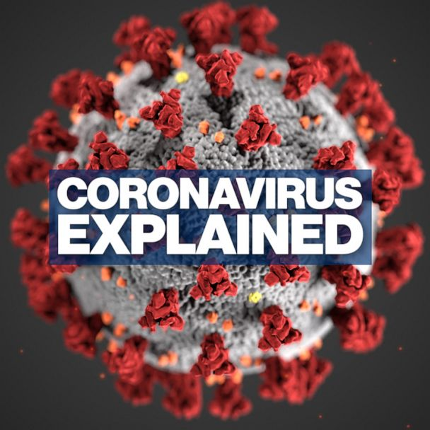

Latest News

Fake news is news or stories on the internet that are not true. There are two kinds of fake news: False stories that are deliberately published or sent around, in order to make people believe something untrue or to get lots of people to visit a website. These are deliberate lies that are put online, even though the person writing them knows that they are made up. Stories that may have some truth to them, but they're not completely accurate. This is because the people writing them - for example, journalists or bloggers - don't check all of the facts before publishing the story, or they might exaggerate some of it. It is happening a lot at the moment, with many people publishing these stories in order to get as many shares as possible.
Previous News

The first case of COVID-19 was reported Dec. 1, 2019, and the cause was a then-new coronavirus later named SARS-CoV-2. SARS-CoV-2 may have originated in an animal and changed (mutated) so it could cause illness in humans. In the past, several infectious disease outbreaks have been traced to viruses originating in birds, pigs, bats and other animals that mutated to become dangerous to humans. Research continues, and more study may reveal how and why the coronavirus evolved to cause pandemic disease. Symptoms show up in people within two to 14 days of exposure to the virus. A person infected with the coronavirus is contagious to others for up to two days before symptoms appear, and they remain contagious to others for 10 to 20 days, depending upon their immune system and the severity of their illness. Cases are slowly rising so I would advise you to stay in doors.